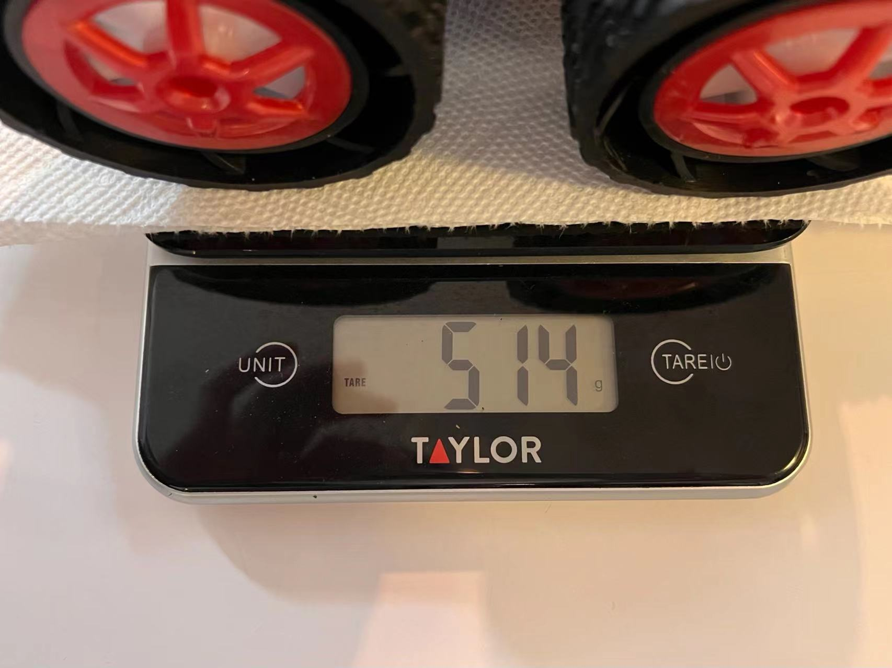
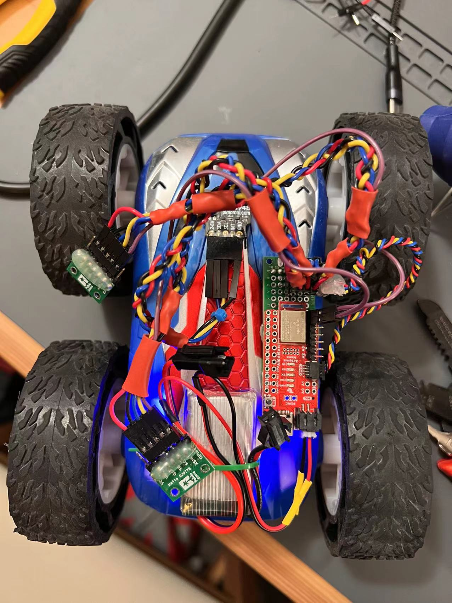
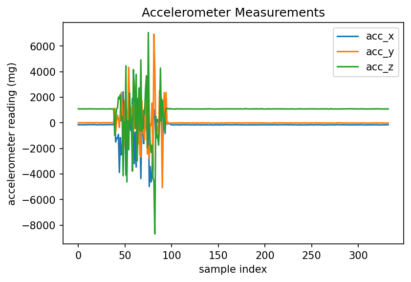
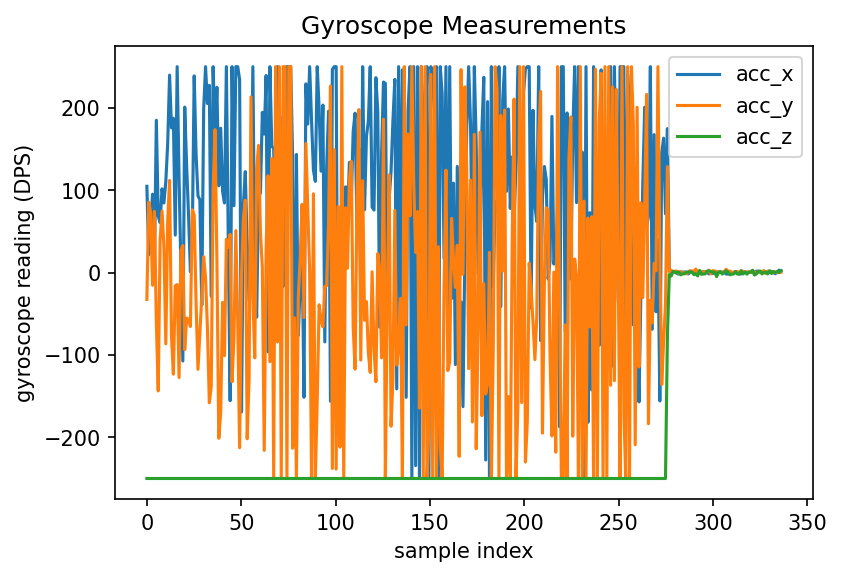

Before we take apart the car and swap the cheap PCB inside with our elegant Artemis board, we can use the remote control that came with the car to understand the capabilities/characteristics of the hardware. In this lab, I will conduct a couple of tests to gather information and data about the hardware. I will also reason why a particular test or the data gathered may/will be necessary or helpful for future labs when the car becomes autonomous.
The instructor team provides a couple of testing ideas, which can be categorized into two aspects: a simple measurement, and one that needs experimental setups. Since I'm an honorable (haha) 5000 level student, I will need to do at least 2 measurements that requres experimental setups.
Dimensions, weight, and battery life
Why this is important
The final robot we are building is a stunt robot. We don't know yet what stunts we want it to perform / it can perform, but knowing the dimensions and the weight of the robot helps us filter out stunts that the robot absolutely cannot perform. Before implementing a stunt, I would like to do some back-of-envelope calculations to make sure it is doable by the robot before I waste time implementing and finally find out it simply wouldn't work given the robot's dimensions and weight. A simplified example being that if I want to robot to climb over an obstacle, and the obstacle is too large given the robot's physical dimension, then there is no way to overcome this issue. Furthermore, the dimensions also determine things like the turning radius, which will definitely be helpful in future labs.
Measuring the dimensions and the weight of the robot is straightforward. The dimensions are measured with a ruler, and the weight is measured with a kitchen scale. I am attaching photos below to show how the numbers are measured, and the numbers are attached on a table below.
| Measuring... | Dimension (cm) |
|---|---|
| total length | 20 |
| total width | 14 |
| total height / wheel diameter | 8 |
| wheel axis distance | 10 |
The robot's weight is then measured to be 514 grams including the original PCB and the 850 mAh battery.
 Measuring the weight of the robot with a kitchen scale.The battery life of the robot is also undoubtedly important. For short demonstration of stunts, the battery life would not matter much. However, when we are testing and tuning the robot, we will run out of battery life. Knowing the battery life in advance could help me plan our testing and development rhythms ahead of time and boost my productivity.
The 850 mAh battery is first fully charged and plugged into the robot. The testing has a combination of 1) full speed testing with the robot turning around, and 2) casucal testing where I just play with the robot. The battery lasted about 11.5 minutes.
When the robot runs out of battery life, one could clearly tell that it is struggling. The robot struggles when running out of battery.
Acceleration curve when going straight
For these characterizations, I believe it is important to push the robot to its limit such that we know its best capabilities. One important aspect is acceleration. The robot moves because of the motors. Knowing the acceleration would give me some insight of how fast (at most) the motors can move the robot around, which determines what stunts the robot could perform. The acceleration provided by the motor could also be speed-dependent and it is interesting to see.
Experiment setup is simple. The battery is fully charged. The Artemis board is attached to the robot via hot glue. There are two batteries, each powering either the Artemis board or the robot motors. The Artemis board continuously streams accelerometer data to my PC via Bluetooth, and data is visualized on the PC with Python.
 The Artemis board attached to the outside of the robot. Measuring acceleration when going straight.During measurement, the robot goes straight with maximum power, and I let it crash into a yoga mat to stop itself. The final acceleration plot is shown below.
 Plot of measured robot acceleration.Looking at the plot (especially the x-axis because the robot is going straight), we can see that the maximum acceleration of the robot is around ~4000 mg. This is very fast and is definitely faster than I have expected. We can also notice an increasing trend of acceleration as the robot picks up speed. If there is a longer lane, we will probably see decreasing acceleration over time as well.
Maximum angular speed
Similar to the reason why measuring acceleration is important, the maximum angular speed determines how fast the robot can turn and therefore it is important as well. The experiment setup is similar to measuring the acceleration, except that this time the robot streams gyroscope data instead of accelerometer data, and the robot turns around in full speed instead of going straight. The final angular speed plot is shown below.
 Plot of measured angular speed from gyroscope when the robot is turning around.The gyroscope measurement is less prone to error and fairly consistent when we are looking at the z-axis readings. We see approximately 240 degrees/second of rotation speed when the robot is rotating, meaning that the robot is able to spin 2/3 of a circle every second! It is totally capable of moving fast in future labs!